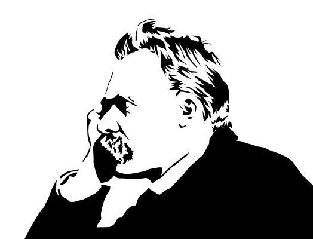

To live is to suffer. To survive is to find some meaning in that suffering. Friedrich Nietzsche
Imagination is more important than knowledge. Albert Einstein
I am not what happened to me, I am what I choose to become. Carl Gustav Jung
Science is an enterprise of human beings, so there are all sorts of jealousies and rivalries and unwillingness to admit mistakes, but the great advantage is that the culture of science is opposed to these frailties, and the collective enterprise of science undoes them. We give our highest rewards to those who disprove the contentions of our most revered figures. Carl Sagan
ad aspera ad astra
“through hardships to the stars”